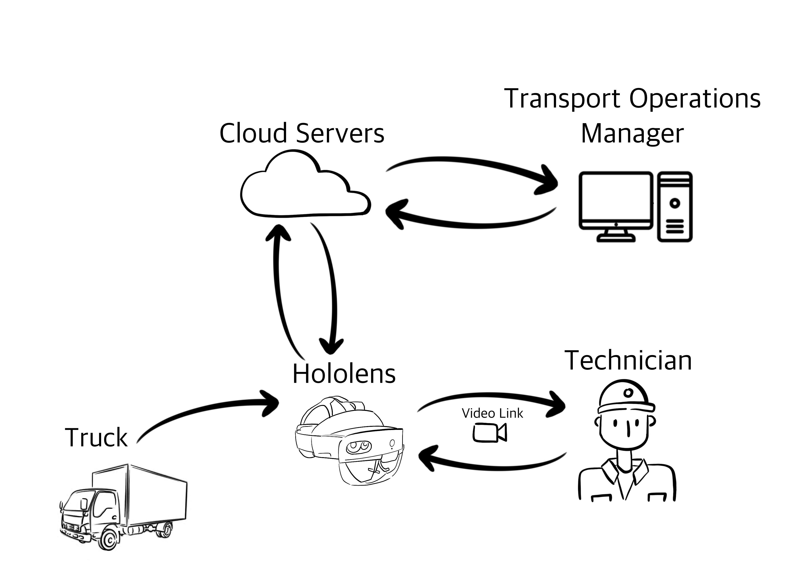

Andrew was born and raised in Melbourne Australia, however since December 2012 he has been living and working in Frankfurt am Main in Germany.
I live in Wodonga, VIC and am completing a Bachelor of IT with the desire to become a games developer. My interest in IT as a possible career started while I was studying Engineering at university.
Born and raised in Melbourne, my childhood travelled across many different suburbs throughout Victoria.
Born and raised in Tasmania, Australia. His childhood environments varied from agriculture to beach and as far abroad as South-East Asia.
Also originally from Tasmania, Leigh is a sales professional currently working in transport technology involving GPS tracking, managing fatigue for the trucking industry.
Yury is from Melbourne however he originally comes from Moscow, Russia. He also spent some time living in Vietnam which resulted in him picking up 3 languages in the process.
We would like to develop an application that can be installed onto the Microsoft HoloLens II or other Augmented Reality (AR) platform. The application will give vehicle drivers access to all the important information necessary to maintain their vehicle, including vehicle specifications, operating instructions, troubleshooting and diagnosis guides. The Technology will facilitate live video transmission from the driver back to a technician so that maintenance procedures can be guided remotely. It will also facilitate the transmission of live truck data (sensor outputs, driving habits, vehicle faults etc) back to the Transport Operations Cell of a transport company. The device with this application will save drivers hours of time waiting on the side of the road for a mechanic and will save the fleet owners thousands in reduced compliance infringements, preventable breakdowns and even vehicle accidents.
Transport and the movement of goods cease when trucks and buses break down. Often companies must send technicians out from a workshop to diagnose, fix and/or recover broken-down vehicles. Alternatively, companies pay large call-out fees to contracted mobile mechanics. The technicians who deploy to support breakdowns are often going in blind, having only received vague fault descriptions in a work request email or over the phone. As a result, Technicians may take the incorrect tools and parts for the job or they may be driving out to do a repair that cannot be achieved on the side of the road. Sometimes the fix is simple and could be achieved by the driver. Sometimes the breakdown has occurred because the driver did not fully understand the operation of the vehicle or the daily maintenance requirements and fluid specifications of the vehicle.
The Remote Guided Maintenance (RGM) concept seeks to address all these issues by a providing each vehicle of an organisation with a wearable Augmented Reality device. The device would be installed with a practical application tailored to the make and model of the vehicle it belongs in.
Some transport jobs require the truck driver to go out of mobile coverage. For this reason, the HoloLens will store all necessary data and AR overlays on the device itself, which currently has 64GB of storage space.
When the driver first enters the truck they will switch on the HoloLens. They will be asked for their employee ID and a password. Upon successful login, the HoloLens will connect with the trucks ECU via the Veepeak OBD2 Wireless Dongle (more on this in the Hardware section). The HoloLens will confirm that it is in the correct vehicle based on the unique Vehicle Identification Number or VIN.
The HoloLens then enters the Index Screen and asks the driver what they would like to do. The following options are available:
This page guides the driver through all the checks that need to be performed on the truck before it is started. It also guides the driver through checks that should be conducted at the end of the shift when the vehicle is shutdown. For example: The following checks are to occur before the vehicle is started:
The purpose of the first and last parade is twofold. Firstly, it is done to reduce the likelihood of a break down on the road. It is also done to ensure that the vehicle is compliant for road transport.
Penalties for non-compliance are metered out by regulators such as the NHVR in Australia. Aside from penalties, non-compliance offences can result in several other consequences. There is a financial burden to the vehicle operator in both the paying of fines and the loss of customers because of reputational damage (NHVR, 2020). Non-compliance can lead to machinery failure but more importantly, it can present health and safety risks to the driver, other road users and pedestrians. As such, “pre-trip” or “pre-start” vehicle inspections have become standard practice in the transport industry to ensure that operators are complying with the Chain of Responsibility (COR) laws.
Pre-trip inspections have traditionally been performed by pen and paper with the driver doing a lap of the truck with a clip board and ticking boxes. When done routinely, there is a known temptation for drivers on a tight schedule to complete the checklist from the cabin – essentially falsifying the inspection.
Our intention is to replace the paper and pen method of completing pre-trip inspections with a recorded inspection using the AR headset. This way, the employer is assured that the inspection has been completed, and any issues that are found can be channelled quickly to the correct workflow process - catalogued and addressed immediately or forwarded to the depot’s maintenance personnel.
Vehicle Specifications are important for a driver to be aware of. Knowing the height of the vehicle will prevent you from driving under overpasses or into car parks that are too low. Knowing the weight of your vehicle will prevent you from driving over bridges that cannot support the weight of the vehicle.
This page details the name, location, description, and function of all components that make up the vehicle. Modern trucks come fitted with many buttons and toggles, it can be hard to remember what all the functions are and how to use them.
There are three methods of finding a component on this page:
1. Looking at the vehicle with the AR goggles and pointing to a component
2. Using voice to search for an item – “Where are the Air Tanks?”
3. A categorical drop-down list of components to select from, for example;
This function takes a driver through a step by step guide on troubleshooting vehicle faults. For example, if the vehicle does not start then the driver would navigate to this page and search for the appropriate troubleshooting guide using either voice command or scrolling through a list. A sequenced diagnosis guide may look like this:
a. Truck does not start
If the fault is identified, the application will provide guidance on how it can be rectified. If the fault requires tools or equipment, then the driver will be directed to the page: Contact the Mechanic.
This page functions as a video conference host between the AR device and an application installed on the phone of a mechanic. The mechanic is accessible when the drivers AR goggles and mechanics phone are both connected to a wireless network. The mechanic can see exactly what the driver is looking at and ask them questions. Some repairs may be achievable by the driver under the guidance of the mechanic. For faults that are not able to be rectified remotely, the mechanic will need to drive out and repair the vehicle himself or have the vehicle recovered to the workshop. Since the mechanic has been able to see the fault, they will know exactly what tools and parts to take to the job, or if it is unrepairable and not worth driving to. In which case, recovery can be actioned without a wasted drive to the site.
Telematics is an increasingly emergent branch of IT that deals with the long-distance transfer of computerised data, such as electronic data from a truck in our case. Insurance providers are increasingly using data captured by Telematics to tailor insurance policies. Telematics data is gathered via the OBD2 port of the vehicle using a wireless dongle such as the Veepeak dongle that the RGM utilises.
Data gathered can be used to:
According to a Willis Towers Watson study, the number of crashes in commercial fleets that were monitored by telematics fell by 80%.
A Cloud server will be used for the transmission of all Telematics data from the truck to the headquarters of the trucking company. The data flow as seen in Figure 2 below, begins at the truck. Data from the ECU is received by the HoloLens. The HoloLens uploads that data to a Cloud server. The data is then accessible through an online (SaaS) application monitored by the Transport Operations Manager.
The driver also has a direct line of video communication with a technician as well. It is anticipated that a technician working from a depot can send commands to the vehicles ECU via the HoloLens.
However, cybersecurity will be a significant point of emphasis since a wireless device will be connected to the truck’s computer. There are examples on YouTube where ethical hackers have hacked into vehicles while they were on the road and overridden braking and steering functions.
The Microsoft HoloLens 2 is available in Australia here, and retails for AU$5,599.00 incl. GST. As of May 2020, the HoloLens 2 does not have integrated 4G or 5G. While the technology catches up to the requirements of RGM we can use an alternative means of network connectivity. A USB modem such as the Telstra 4GX gives users access to 4G data on the go. The 4GX coupled with this USB-C to USB 3.0 adapter can be plugged into the USB-C port of the HoloLens.
For the HoloLens to integrate with the truck completely, it will need a means of connecting to the trucks ECU (Electronic Control Unit). To connect to the ECU you must plug into the OBD (On-Board Diagnostics) port of the vehicle. Most vehicles produced after 1996 will have this port (Allstate 2020) and it is typically located under the dash on the driver or passenger side.
In connecting the HoloLens to the ECU we will utilise a wireless OBD2 dongle that pairs with the PyOBD application. PyOBD is an open source OBD2 diagnostic application written entirely in python. The software can be installed on a device with python 2.x or greater. The HoloLens can support the latest version of Python due to it running the Mixed Reality platform under the Windows 10 computer OS.
‘The MaxiECU 4th Gen OBD2 scan tool is a professional full system scan tool that connects to your windows laptop or tablet via stable Bluetooth or Wi-Fi connection.’ (OBD2 Australia 2020). This device is small and can be left attached to the OBD2 port permanently. The MaxiECU and the HoloLens both support Bluetooth and Wi-Fi which provides a redundancy for connectivity.
The HoloLens will require a docking station within the truck that satisfies the following:
It is important that the docking station does not interfere with the driver’s field of view as this can constitute an illegal modification. The HoloLens uses a USB cable to recharge and does not draw any more than two amps. The USB power outlet or cigarette outlet of a truck will be fit to facilitate this.
In designing the dock, it is important to consider the number of different vehicles that it may be used in. Keeping this in mind it is likely the dock would be designed as a two-piece component. The majority of the docking system including the device bed, the charging integration and the hold-down mechanism should be constructed as one piece with a universal boss. The second part to the dock will be tailored to the specifications of the vehicle that it mounts in. This means part one can be mass produced while part two can be made case by case.
Ideally, members would have the following social and human characteristics and skills:
Team members with these technical skillsets are preferred:
No matter how good our product is, it is critical that we sell it at a price that customers respond to, but also provides an adequate margin, enables the business to operate effectively and permits us to re-invest and continuously improve the solution.
To ensure recurring revenue, pricing would be on an optional rental model of 36, 48 or 60 months. This would cover hardware and software, installation (if required), access to the maintenance platform and technical support. It would be critical that our pricing is clear and transparent as this would build trust in our brand (Balki, 2018).
We agree that an outright pricing option would be considered, however in order to encourage customers down the rental path, warranty for outright purchase would be limited to one year whereas under the rental option the warranty would be in place for the full term.
Outright purchasers would also still need to pay a monthly subscription for access to the software.
While the Microsoft HoloLens is expensive (retailing for just under AU$5,600) there are a range of other virtual reality headsets on the market costing considerably less. Oculus headsets retail for around AU$500 (Stein, 2020), though we would obviously gain re-seller prices for any off the shelf product. There is also a growing market in AR glasses (Sawh, M 2020). Our challenge would be to find (or engage a manufacturer to produce) a headset that fulfils our requirements and provides a positive user experience.
Whilst extensive market research would be performed to ensure we hit the right price point, our initial feeling is that truck operators would pay $90 per month for the solution over a 36 month term.
At $90 this would provide an annual revenue of $1,080 and total contract value of $3,240.
After the rental term ended, we would look to re-sign the customer with new hardware, or ideally squeeze additional months out of the existing hardware in order to maximise our return on the up-front hardware costs.
The Remote Guided Maintenance system is a multi-functional application utilising current and emerging technology such as Augmented Reality, the Cloud, live video transfer and remote control. The fourth industrial revolution is upon us. To prepare for a data dominated future, organisations need the right tools to collect, analyse and act on it (A. Dugan 2020).
Although our proposal has largely been tailored toward large trucking companies, we agree that it holds an equal amount of relevance in other transport sectors such as bussing, trains, taxis and even marine transport. We also see a potential market for upper class vehicles. Nobody likes waiting on the side of the road for the mobile mechanic, particularly when it is only for a simple fix.
Our concept has been designed to increase situational awareness, empower operators to do more, reduce safety incidents, enhance fleet longevity and increase profits.
We are excited to continue developing the Remote Guided Maintenance system in preparation to present to market. We hope to partner with your company where we can tailor this system to your vehicles and to meet your specific needs.